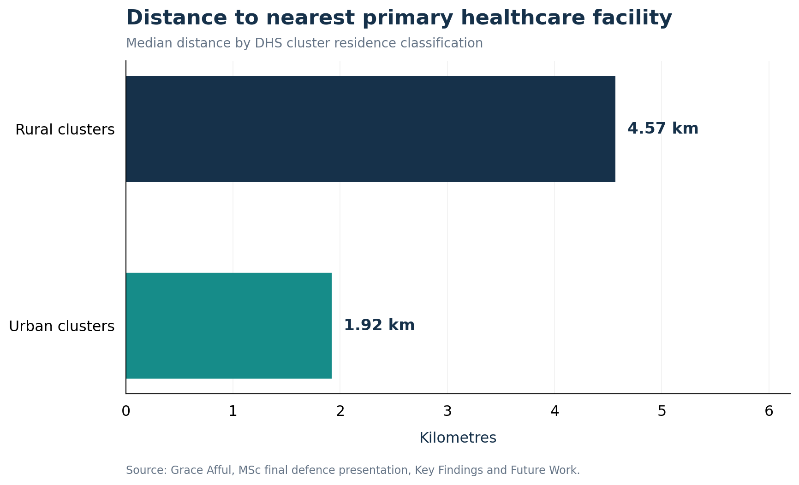
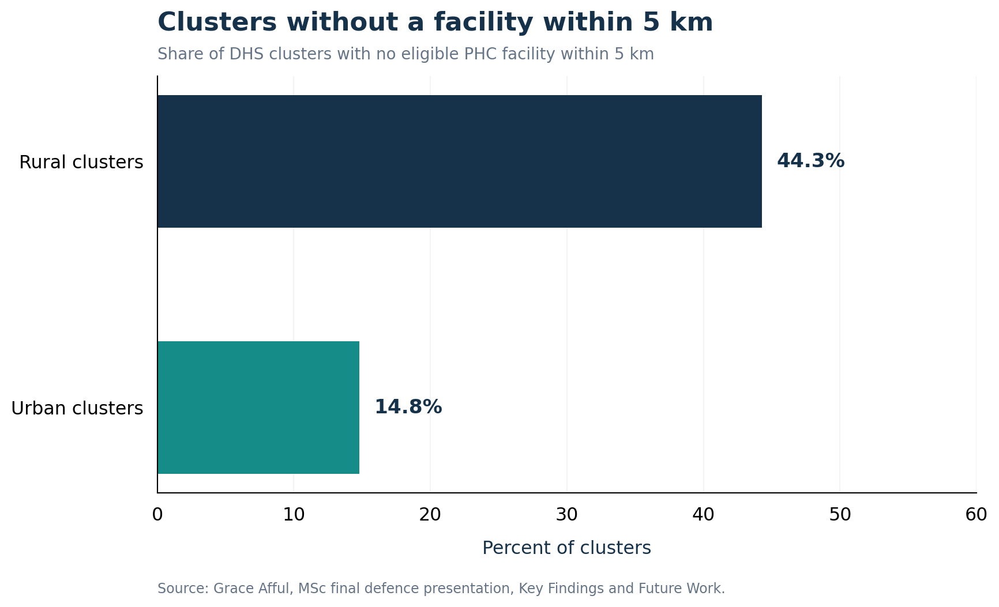

Data Sources
- 2022 Ghana Demographic and Health Survey
- Geographic survey-cluster data
- Geocoded healthcare-facility data
GEOSPATIAL HEALTH RESEARCH
An investigation of how geographic location and socioeconomic conditions shape access to primary healthcare services in Ghana.
Research in progress. Findings and interpretations remain preliminary until the thesis is approved.
PROJECT OVERVIEW
This research examines how geographic location and social resources shape access to primary healthcare in Ghana. It integrates the 2022 Ghana Demographic and Health Survey with geocoded health-facility information to examine patterns of spatial accessibility and healthcare use.
The analysis combines survey weighting, spatial accessibility measures and multilevel logistic regression to investigate inequalities between population groups and geographic areas.
Dataset counts describe the source files and do not necessarily represent the final analytic samples.
RESEARCH PROBLEM
Healthcare facilities are not distributed evenly across geographic areas. Differences in travel distance, local facility availability and social resources may affect people's opportunities to access primary healthcare.
This study examines geographic accessibility alongside individual and household characteristics, including health insurance, wealth and education.
How do geographic accessibility and social characteristics relate to the use of primary healthcare services in Ghana?
MY CONTRIBUTION
I developed the analytical workflow, prepared secondary survey and spatial datasets, constructed geographic accessibility measures and applied statistical methods to investigate healthcare access patterns.
The work includes data preparation, spatial analysis, statistical modelling, visualization and interpretation of results.
DATA AND TOOLS
RESEARCH PROCESS
RESEARCH RESULTS
The research examines differences in geographic accessibility and healthcare use across population groups and locations.
In the study’s descriptive geographic analysis, rural clusters had a median distance of 4.57 km to the nearest primary healthcare facility, compared with 1.92 km for urban clusters. The proportion with no facility within 5 km was 44.3% in rural clusters and 14.8% in urban clusters.
RESEARCH VISUALIZATIONS
Selected descriptive findings from the Ghana primary healthcare accessibility study.


LIMITATIONS AND LESSONS
Geographic survey-cluster coordinates are displaced to protect respondent confidentiality. This introduces uncertainty into facility-distance and local accessibility estimates.
The study also relies on secondary and cross-sectional data, so statistical associations should not automatically be interpreted as causal relationships.
These considerations inform the interpretation of spatial patterns and statistical results.